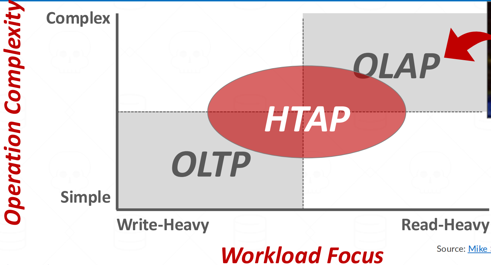
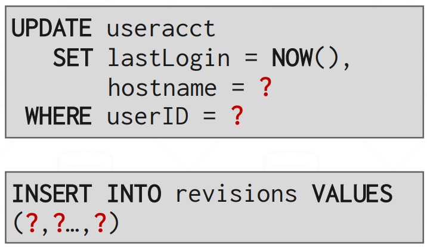
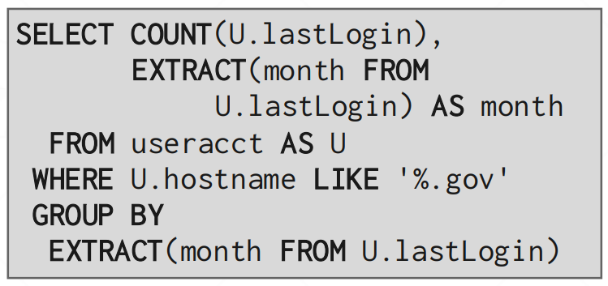
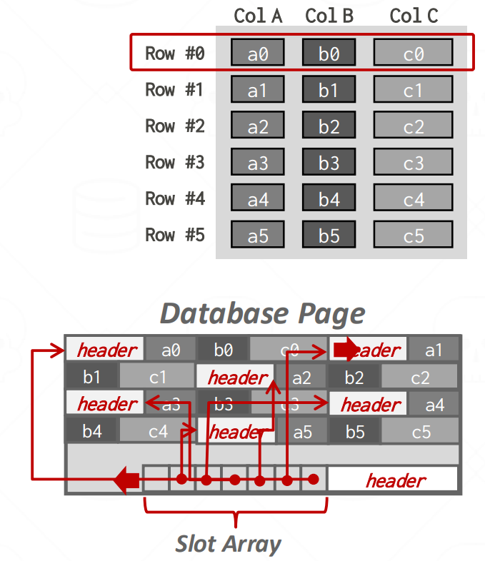
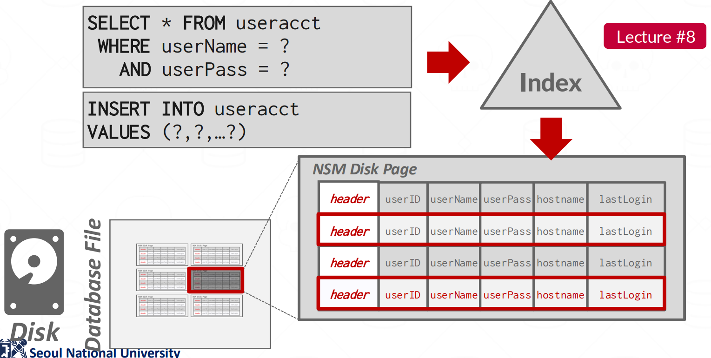
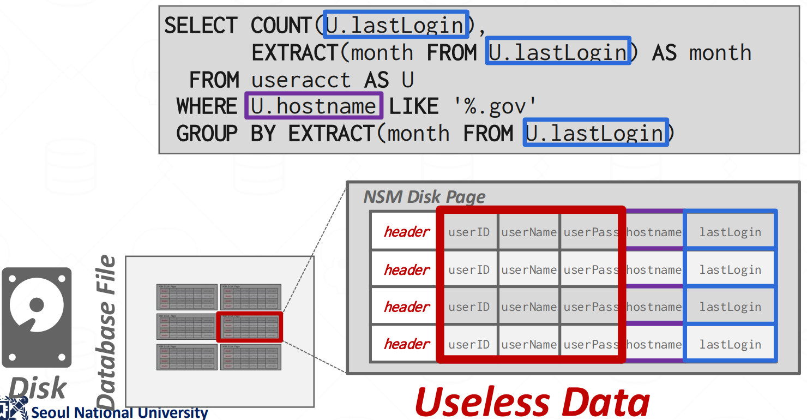
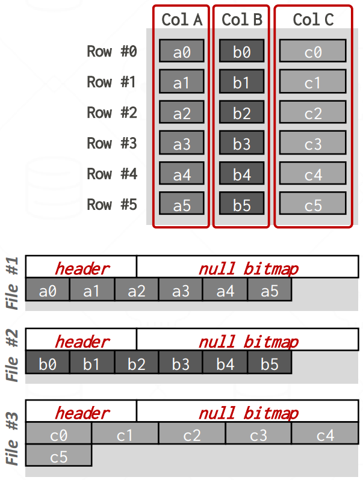
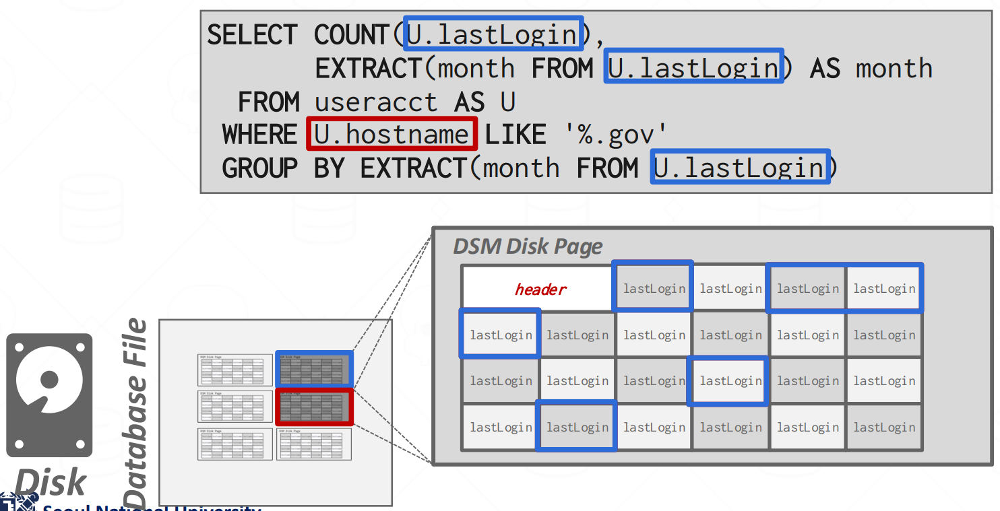
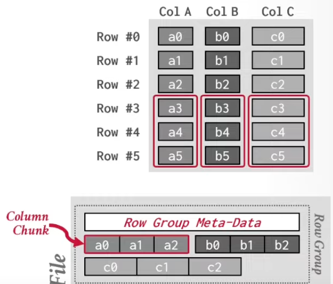

서울대학교 데이터사이언스대학원 정형수 교수님의 "데이터사이언스 응용을 위한 빅데이터 및 지식 관리 시스템" 강의를 필기한 내용입니다.
Checkin (Revisit Storage part 2)
- Index-organized storage
- B-tree index 를 위해 sorting 하여 page 단위로 데이터를 저장하는 방식
- Log-structured storage
- Index-organized storage 에서의 IO amp, fragmentation, random IO 문제를 해결하기 위해 update 를 delta insert 로 바꾸어 sequential IO 를 하는 방식
- 이제 workload 에 따라 필요한 net data 의 특징이 다르고, 해당 data 특성에 맞게 IO amp 를 더욱 줄이고자 하는 column store 에 대해 배워보자.
Database workloads

- OLTP (On-Line Transaction Processing): 값을 “변경” 하는 것이 주된 목적인 workload
- 이놈은 적은 데이터를 조회하며
- 여기서 “적은 데이터” 는 “적은 수의 tuple” 로 생각하면 된다.
- 빠른 성능과 ACID 를 요구하고
- 간단한 형태의 INSERT, UPDATE, DELETE query 가 많다.
- 가령 아래와 같은 애들
- 이놈은 적은 데이터를 조회하며

- OLAP (On-Line Analytical Processing): 많은 양의 데이터를 “분석” 하는 것이 목적인 workload
- 이놈은 많은 데이터를 읽어들여 그것을 aggregate 한다.
- 여기서 “많은 데이터” 는 “적은 수의 column 에 대한 table 전체 데이터” 로 생각하면 된다.
- 복잡한 형태의 SFW (SELECT FROM WHERE) query 가 사용된다.
- 가령 아래와 같은 query 들
- 이놈은 많은 데이터를 읽어들여 그것을 aggregate 한다.

- HTAP (Hybrid Transaction + Analytical Processing): OLTP + OLAP
- OLTP 와 OLAP 각각의 query 가 요구하는 데이터는 정리하자면
- OLTP 는 적은 수의 tuple 전체
- OLAP 는 적은 수의 column 에 대한 table 전체
- 가 된다.
Storage models
- Relational model 은 데이터를 기술하기 위한 high-level abstraction 일 뿐이고, 실제로 그것을 어떻게 physical 하게 저장할지는 storage (disk) manager 가 해야 한다.
- 이 “어떻게 저장?” 이 storage model 인 것.
N-ary Storage Model (NSM)

- N-ary Storage Model (NSM) 이놈은 N 개의 tuple 들을 저장하는 것임. 즉, row-oriented store.

- 그래서 OLTP query 에서는 위 그림처럼 Index 로 RID 를 찾아 해당 tuple 을 읽어오거나 아니면 그냥 page 의 빈 slot 에 저장하는 식으로 간편하게 처리된다.

- 근데 OLAP query 에서는 위 그림에서 보이는 것 처럼 실제로 필요한 데이터는 적은 수의 column 들인데, page 전체를 읽으면 다른 column 들도 전부 읽히기 때문에 read amp 가 심해진다.
- 왼쪽 아래의 Disk 부분에서 어둡게 표시된 곳이 읽어들인 page 이라는 것을 감안해 위의 두 그림을 비교해 보면 차이가 확연하게 드러날 것이다.
- 이 read amp 는 조금 더 생각해 보면 사용되지 않을 데이터를 caching 해놓은 격이기 때문에 성능을 더 악화시킨다.
Decomposition Storage Model (DSM)

- Decomposition Storage Model (DSM) 이놈은 tuple 들을 column 방향으로 저장하는 것임. 즉, column 방향으로 쪼갠다고 해서 Decomposition 인 것이고 따라서 columnar-oriented store 인 것.

- 이렇게 하면 읽어야 할 file 들의 개수가 훨씬 적어진다.
- “Database File” 에서 진한 회색으로 표시된 file 들의 개수를 비교해 보면 차이가 크죠?
- 그리고 이 데이터들이 인접하게 저장되어 있다는 점은 caching 에도 아주 잘 맞는다.
- 하지만 당연하게도 OLTP query 에는 아주 쥐약이다.
Tuple identification
- 이렇게 column data 만 있을 때 이놈이 어떤 tuple 의 것인지 어떻게 아느냐
- Fixed-length offsets: 그냥 원래의 tuple 순서대로 저장하는 것
- Embeded tuple IDs: compression 을 효과적으로 하기 위함 등의 이유로 인해 순서가 바뀌는 경우, 각각의 ID 를 같이 적어주는 것
- 이때는 당연히 추가적인 공간이 필요하니까 overhead 가 있다.
Variable sized data
- 그냥 같은 크기가 되도록 padding 을 넣거나
- 물론 이렇게만 하면 공간 활용도가 안좋아지지만, DSM 은 compression 이 용이하기 때문에 더 좋게 할 수 있다.
- 아니면 Dictionary 를 적용한댄다.
Hybrid Storage Mode, Partition Attribute Across (PAX)

- Hybrid Storage Model, Partition Attribute Across (PAX) 이놈은 위 두개를 섞은 것이다.
- Columnar 을 하되, 모든 데이터를 columnar 로 저장하지 말고 특정 개수의 record 씩 (Record Group) 만 columnar 로 저장하자.
- 가령 record 10개씩만 columnar 로 저장해서 한번 읽어갈 때 record 10 개를 다 읽어갈 수 있게 하되 sequential 로 읽으면 columar 이 되게
- 이건 두 가지의 observation 에서 나온 것이다
- 첫째는 OLAP 에서 column 하나만 접근하는 일은 그리 흔치 않다는 것이다
- 따라서 column 방향으로 자른 column group 을 만들고
- 둘째는 OLTP 와 OLAP 기능 모두를 제공하는 HTAP 을 위해서는 두 방식 (NSM, DSM) 을 섞은 format 이 도움이 될 것이라는 것이다.
- 따라서 column group 외에도 row 방향으로 자른 row group 도 만들어 이렇게 두 방향으로 자른 단위로 파일을 저장하자는 것이 아이디어
- 물론 이렇게 하면 NSM 에 비해 OLTP query 는 안좋긴 하겠지만 DSM 만큼 심하게 안좋아지지는 않을 것이다
- 첫째는 OLAP 에서 column 하나만 접근하는 일은 그리 흔치 않다는 것이다
Compression
- 기본적으로 loseless scheme 을 사용한다. 당연히 원본의 데이터를 보존해야 하기 때문.
- 동일한 데이터를 최대한 적은 bit 로 표현하는게 목표다.
- 압축하는 단위는 block of tuple, tuple, attribute (domain), column (DSM) 정도로 구분할 수 있다.
- compressed query 연구가 되고 있긴 하지만 일반적으로는 decompress 한 다음에 query execution 을 한다.
- MySQL InnoDB 에서는 Mod Log (Modification Log) 에 compression metadata 가 담겨서 이걸 통해 다시 decompress 한다.
- 얘네들은 이미 알고있으니까 넘어감: RLE, BP, Bitmap, DELTA, DICT